<title>Freeman / Perspective</title>
<meta name="claude:viewport-fit-sides" content="cover">
<link rel="preconnect" href="https://fonts.googleapis.com">
<link rel="preconnect" href="https://fonts.gstatic.com" crossorigin>
<link rel="stylesheet" href="https://fonts.googleapis.com/css2?family=Libre+Franklin:ital,wght@0,300;0,400;0,500;0,600;1,300;1,400&display=swap">
<style>
/* Layout: twelve plates in Freeman's three colorways (paper, sand, umber), read top to bottom like a deck.
   Single deliberate look taken from the production site; every colour set explicitly. */
:root{
  --paper:#fff9f1; --sand:#ddcfb3; --umber:#332e20;
  --ink:#332e20; --muted:#706659; --hair:#d5cec3; --red:#f93822;
  --face:"Libre Franklin","Franklin Gothic Book","Franklin Gothic",Arial,sans-serif;
  --gut:max(16px, env(safe-area-inset-left, 0px));
  --gutR:max(16px, env(safe-area-inset-right, 0px));
  --edge:clamp(16px,3.2vw,48px);
  color-scheme:light;
}
*{box-sizing:border-box}
html{background:var(--paper)}
body{margin:0;background:var(--paper);color:var(--ink);font:400 15px/1.55 var(--face);-webkit-font-smoothing:antialiased;cursor:crosshair}
a{color:inherit}
img{display:block;max-width:100%}
.plate{--bg:var(--paper);--fg:var(--ink);--mu:var(--muted);--hl:var(--hair);--wait:#f3ead9;background:var(--bg);color:var(--fg);position:relative}
.plate[data-tone="sand"]{--bg:var(--sand);--fg:#332e20;--mu:#6d6150;--hl:#b5a68c;--wait:#d2c3a5}
.plate[data-tone="umber"]{--bg:var(--umber);--fg:#fff9f1;--mu:#c5b9a7;--hl:#71685c;--wait:#3d3727}
.in{padding-left:max(var(--edge),env(safe-area-inset-left,0px));padding-right:max(var(--edge),env(safe-area-inset-right,0px));padding-block:clamp(40px,6vw,88px);max-width:1680px;margin:0 auto}
@media (min-width:960px){.plate{min-height:min(100vh,1000px);display:flex;flex-direction:column;justify-content:center}.plate>.in{width:100%}}
.lab{font:500 10.5px/1.5 var(--face);letter-spacing:.09em;text-transform:uppercase;color:var(--mu)}
.lab b{font-weight:600;color:var(--fg)}
.lab.red{color:var(--red)}
.num{position:absolute;top:clamp(14px,2vw,26px);right:max(var(--edge),env(safe-area-inset-right,0px));font:500 10.5px/1 var(--face);letter-spacing:.09em;color:var(--mu);font-variant-numeric:tabular-nums}
.sec{position:absolute;top:clamp(14px,2vw,26px);left:max(var(--edge),env(safe-area-inset-left,0px));font:500 10.5px/1 var(--face);letter-spacing:.09em;color:var(--mu);text-transform:uppercase}
h1,h2{font-weight:400;letter-spacing:-.022em;line-height:1.02;margin:0;text-wrap:balance}
h2{font-size:clamp(32px,4.4vw,72px)}
h2.s{font-size:clamp(26px,3vw,46px);line-height:1.08}
p{margin:0;max-width:34em;text-wrap:pretty}
.lede{font-size:clamp(16px,1.25vw,19px);line-height:1.5;font-weight:300}
.cap{margin-top:10px;display:flex;justify-content:space-between;gap:12px;flex-wrap:wrap}
figure{margin:0;min-width:0}
.ph{width:100%;height:100%;object-fit:cover}
.wait{background:var(--wait);border:1px solid var(--hl);position:relative;display:flex;flex-direction:column;justify-content:space-between;padding:12px;min-height:0}
.wait::before,.wait::after{content:"";position:absolute;left:50%;top:50%;background:var(--hl)}
.wait::before{width:23px;height:1px;transform:translate(-50%,-50%)}
.wait::after{width:1px;height:23px;transform:translate(-50%,-50%)}
.wait .lab{position:relative;z-index:1}
.wait .what{font:400 12.5px/1.4 var(--face);color:var(--fg);max-width:22em;position:relative;z-index:1}
.stack{display:flex;flex-direction:column;gap:18px;min-width:0}
.vis,.three .cell,.sys .f45,.sys .f169,.idn .trio .v{position:relative;overflow:hidden}
.vis>img.ph,.three .cell>img.ph,.sys .f45>img.ph,.sys .f169>img.ph,.idn .trio .v>img.ph,.ig .tiles img.ph{position:absolute;inset:0}
.plate.note{min-height:0}
canvas.px{image-rendering:pixelated;image-rendering:crisp-edges;display:block}

/* 00 cover */
.cover .in{display:grid;place-items:center;min-height:min(100vh,1000px);padding-block:80px}
.cover .mark{width:min(640px,78vw);aspect-ratio:160/61}
.cover .mark canvas{width:100%;height:100%}
.cover .under{margin-top:clamp(28px,4vw,56px);text-align:center;display:grid;gap:8px}
.cover .foot{position:absolute;left:0;right:0;bottom:clamp(16px,2.4vw,30px);padding-left:max(var(--edge),env(safe-area-inset-left,0px));padding-right:max(var(--edge),env(safe-area-inset-right,0px));display:flex;justify-content:space-between;gap:16px;flex-wrap:wrap}

/* 01 thesis */
.thesis .in{display:grid;grid-template-columns:minmax(0,1.15fr) minmax(0,1fr);gap:clamp(24px,4vw,72px);align-items:end}
.thesis figure .ph{aspect-ratio:4/5;height:auto;max-height:82vh}
.thesis .stack{gap:28px;padding-bottom:28px}

/* 02 three times */
.three .head{display:flex;justify-content:space-between;align-items:end;gap:24px;flex-wrap:wrap;margin-bottom:clamp(20px,3vw,40px)}
.three .row{display:grid;grid-template-columns:repeat(3,minmax(0,1fr));gap:clamp(8px,.9vw,14px)}
.three .cell{aspect-ratio:4/5}
.three .t{margin-top:12px;display:grid;gap:4px}
.three .t strong{font:400 clamp(20px,1.9vw,28px)/1.1 var(--face);letter-spacing:-.015em}

/* 03 ruskin */
.ruskin .in{display:grid;grid-template-columns:minmax(0,.8fr) minmax(0,1.2fr);gap:clamp(24px,5vw,96px);align-items:center}
.ruskin figure .ph{aspect-ratio:3/4;height:auto}
.ruskin blockquote{margin:0;font:300 clamp(34px,5.4vw,92px)/1.0 var(--face);letter-spacing:-.03em;text-wrap:balance}
.ruskin blockquote em{font-style:italic}

/* 04 film one */
.f1 .in{display:grid;grid-template-columns:minmax(0,1.25fr) minmax(0,1fr);gap:clamp(24px,4vw,72px);align-items:center}
.f1 .frame43{aspect-ratio:4/3}
.f1 .look{display:grid;gap:10px;margin-top:6px}
.f1 .look p{font-size:15px}
.f1 .look p::before{content:"";display:inline-block;width:14px;height:1px;background:var(--red);vertical-align:middle;margin-right:10px}
.f1 .open{border-top:1px solid var(--hl);padding-top:16px}

/* 05 film two */
.f2 .top{display:grid;grid-template-columns:minmax(0,1fr) minmax(0,1fr);gap:clamp(24px,4vw,72px);align-items:end;margin-bottom:clamp(24px,3.4vw,48px)}
.ledger{display:grid;border-top:1px solid var(--hl)}
.ledger div{display:grid;grid-template-columns:minmax(0,9em) minmax(0,1fr);gap:16px;padding:11px 0;border-bottom:1px solid var(--hl)}
.ledger dt{font-weight:500}
.ledger dd{margin:0;color:var(--mu)}
.strip{display:grid;grid-template-columns:repeat(6,minmax(0,1fr));gap:6px}
.strip .wait,.strip figure{aspect-ratio:4/5}
.never{margin-top:18px}

/* 06 formats */
.fm .grid{display:grid;grid-template-columns:repeat(4,minmax(0,1fr));gap:clamp(10px,1.2vw,18px);margin-top:clamp(20px,3vw,40px)}
.fm .card{display:grid;grid-template-rows:auto auto;gap:10px;min-width:0}
.fm .card .vis{aspect-ratio:4/5}
.fm .card h3{margin:0;font:500 12px/1.3 var(--face);letter-spacing:.08em;text-transform:uppercase}
.fm .card p{font-size:13.5px;line-height:1.45;color:var(--mu)}
.fm .when{display:flex;gap:10px;align-items:baseline;justify-content:space-between}


/* 07 lineage */
.lin .head{display:flex;justify-content:space-between;align-items:end;gap:24px;flex-wrap:wrap;margin-bottom:clamp(20px,3vw,40px)}
.lin .refs{display:grid;grid-template-columns:repeat(4,minmax(0,1fr));border-top:1px solid var(--hl)}
.lin .refs>div{display:grid;gap:6px;align-content:start;padding:14px 16px 18px 0;border-bottom:1px solid var(--hl);min-width:0}
.lin .refs h3{margin:0;font:400 clamp(17px,1.4vw,21px)/1.15 var(--face);letter-spacing:-.01em}
.lin .refs p{font-size:13.5px;line-height:1.45;color:var(--mu)}
@media (max-width:900px){.lin .refs{grid-template-columns:repeat(2,minmax(0,1fr))}}
@media (max-width:520px){.lin .refs{grid-template-columns:minmax(0,1fr)}}
/* 08 system */
.sys .frames{display:flex;gap:clamp(14px,2.2vw,36px);align-items:flex-end;margin-top:clamp(20px,3vw,40px);flex-wrap:wrap}
.sys .fr{display:grid;gap:10px;min-width:0}
.sys .f45{width:clamp(180px,20vw,300px);aspect-ratio:4/5}
.sys .f916{width:clamp(170px,16vw,250px);aspect-ratio:9/16;position:relative;overflow:hidden;background:#000;border-radius:2px}
.sys .f169{width:clamp(280px,36vw,560px);aspect-ratio:16/9}
.phone img{position:absolute;inset:0;width:100%;height:100%;object-fit:cover}
.phone .plab{position:absolute;left:9%;bottom:20%;font:500 8.5px/1.5 var(--face);letter-spacing:.09em;color:#fff9f1;text-transform:uppercase;text-shadow:0 0 6px rgba(0,0,0,.35)}
.phone .endp{position:absolute;inset:0;background:var(--paper);display:grid;place-items:center}
.phone .endp canvas{width:62%;aspect-ratio:192/60}
.capspec{margin-top:clamp(24px,3vw,40px);display:grid;grid-template-columns:minmax(0,1fr) minmax(0,1fr);gap:clamp(20px,4vw,72px)}
.capspec pre{margin:0;font:400 13.5px/1.6 var(--face);white-space:pre-wrap;border-left:1px solid var(--hl);padding-left:16px;color:var(--fg)}

/* 08 grid */
.gr .in{display:grid;grid-template-columns:minmax(0,1fr) minmax(0,420px);gap:clamp(24px,5vw,96px);align-items:center}
.ig{width:100%;max-width:420px;background:#fff;color:#262626;border:1px solid var(--hl);padding:16px 0 0;justify-self:end}
.ig .pr{display:flex;gap:16px;align-items:center;padding:0 16px 12px}
.ig .av{width:64px;height:64px;border-radius:50%;background:var(--paper);border:1px solid #e3ddd3;display:grid;place-items:center;flex:none}
.ig .av canvas{width:46px;aspect-ratio:192/60}
.ig .h{font:600 14px/1.3 var(--face);letter-spacing:0}
.ig .bio{font:400 12.5px/1.4 var(--face);color:#3a3a3a}
.ig .hl{display:flex;gap:12px;padding:6px 16px 14px;overflow:hidden}
.ig .hl span{font:500 8.5px/1 var(--face);letter-spacing:.08em;text-transform:uppercase;color:#555;display:grid;justify-items:center;gap:6px}
.ig .hl span::before{content:"";width:40px;height:40px;border-radius:50%;border:1px solid #ddd;background:var(--paper)}
.ig .tiles{display:grid;grid-template-columns:repeat(3,minmax(0,1fr));gap:2px}
.ig .tiles>*{aspect-ratio:3/4;overflow:hidden;position:relative;min-width:0}
.ig .tiles .wait{padding:7px;border:0}
.ig .tiles .wait .lab{font-size:7px;letter-spacing:.08em}
.ig .tiles .wait .what{font-size:8.5px}
.ig .tiles .wait::before{width:13px}.ig .tiles .wait::after{height:13px}
.tq{background:var(--paper);display:flex;align-items:center;padding:10px;font:300 13px/1.15 var(--face);letter-spacing:-.01em;color:var(--umber)}
.te{background:var(--umber);display:grid;place-items:center}
.te canvas{width:64%;aspect-ratio:192/60}
.reel::after{content:"";position:absolute;top:7px;right:7px;width:0;height:0;border-left:7px solid #fff;border-top:4.5px solid transparent;border-bottom:4.5px solid transparent;filter:drop-shadow(0 0 2px rgba(0,0,0,.4))}
.gr .notes{display:grid;gap:22px}
.gr .rows{display:grid;gap:8px;border-top:1px solid var(--hl);padding-top:16px}
.gr .rows div{display:grid;grid-template-columns:5em minmax(0,1fr);gap:12px}

/* 09 identity */
.idn .in{display:grid;grid-template-columns:minmax(0,1fr) minmax(0,1.1fr);gap:clamp(24px,4vw,72px);align-items:center}
.idn .stamp{background:var(--paper);aspect-ratio:16/9;display:grid;place-items:center;border:1px solid var(--hl);cursor:pointer}
.idn .stamp canvas{width:48%;aspect-ratio:192/60}
.idn .trio{display:grid;grid-template-columns:repeat(3,minmax(0,1fr));gap:10px;margin-top:10px}
.idn .trio>div{display:grid;gap:8px;min-width:0}
.idn .trio .v{aspect-ratio:16/9;position:relative;overflow:hidden;border:1px solid var(--hl)}
.idn .trio .v .lab{position:absolute;left:7%;bottom:10%;font-size:6.5px;color:#fff9f1;text-shadow:0 0 5px rgba(0,0,0,.4)}
.idn .trio .v.paper{background:var(--paper);display:grid;place-items:center}
.idn .trio .v.paper canvas{width:46%;aspect-ratio:192/60}
.idn .trio .v.wait{padding:0}
.idn .trio .v.wait::before,.idn .trio .v.wait::after{background:var(--red)}

/* 10 audience */
.aud .in{display:grid;grid-template-columns:minmax(0,1.2fr) minmax(0,1fr);gap:clamp(24px,5vw,96px);align-items:end}
.aud .who{font:300 clamp(30px,4.2vw,68px)/1.04 var(--face);letter-spacing:-.025em;display:grid}
.aud .who span:nth-child(even){color:var(--mu)}
.aud .credits{display:grid;gap:0;border-top:1px solid var(--hl)}
.aud .credits div{display:grid;grid-template-columns:minmax(0,1fr) auto;gap:12px;padding:8px 0;border-bottom:1px solid var(--hl);font-size:13.5px}
.aud .credits div span:last-child{color:var(--mu);font-size:11px;letter-spacing:.06em;text-transform:uppercase}

/* 11 together */
.tg .cols{display:grid;grid-template-columns:repeat(3,minmax(0,1fr));gap:clamp(18px,3vw,48px);margin-top:clamp(24px,3vw,44px)}
.tg .cols>div{display:grid;gap:10px;align-content:start;border-top:1px solid var(--hl);padding-top:14px;min-width:0}
.tg .cols h3{margin:0;font:400 clamp(22px,2vw,30px)/1.1 var(--face);letter-spacing:-.015em}
.tg .lower{display:grid;grid-template-columns:minmax(0,1fr) minmax(0,1fr);gap:clamp(18px,3vw,48px);margin-top:clamp(28px,4vw,56px)}
.tg ul{margin:0;padding:0;list-style:none;display:grid;gap:7px}
.tg ul li{display:grid;grid-template-columns:1.6em minmax(0,1fr)}
.tg .neg{border:1px solid var(--hl);padding:18px 20px}
.tg .end{margin-top:clamp(40px,6vw,96px);display:grid;justify-items:center;gap:14px}
.tg .end canvas{width:clamp(120px,14vw,200px);aspect-ratio:192/60}

/* phones */
@media (max-width:900px){
  .thesis .in,.ruskin .in,.f1 .in,.f2 .top,.gr .in,.idn .in,.aud .in,.capspec,.tg .lower{grid-template-columns:minmax(0,1fr)}
  .fm .grid{grid-template-columns:repeat(2,minmax(0,1fr))}
  .strip{grid-template-columns:repeat(3,minmax(0,1fr))}
  .tg .cols{grid-template-columns:minmax(0,1fr)}
  .ig{justify-self:center}
  .three .row{grid-template-columns:minmax(0,1fr)}
  .three .cell{aspect-ratio:4/3}
  .sys .f45,.sys .f916,.sys .f169{width:100%}
  .sys .fr{flex:1 1 100%}
  .sys .f916{max-width:280px}
  .thesis figure .ph{max-height:none}
}
@media (max-width:520px){
  .idn .trio{grid-template-columns:minmax(0,1fr)}
  .fm .grid{grid-template-columns:minmax(0,1fr)}
  .ledger div{grid-template-columns:minmax(0,1fr);gap:2px}
}
@media (prefers-reduced-motion:reduce){*{scroll-behavior:auto!important}}
:focus-visible{outline:1px solid var(--red);outline-offset:3px}
</style>

<!-- 00 -->
<section class="plate cover" data-tone="paper" id="cover" aria-label="Cover">
  <div class="in">
    <div>
      <div class="mark"><canvas id="sig" class="px" width="160" height="61" aria-label="Freeman signature"></canvas></div>
      <div class="under">
        <span class="lab"><b>Built for Generations</b></span>
        <span class="lab">Perspective — a visual direction for Tristan · November 2026</span>
      </div>
    </div>
  </div>
  <div class="foot"><span class="lab">Freeman General Contracting<br>Cartersville, Georgia</span><span class="lab" style="text-align:right">Study 002<br>Every photograph is from Freeman's published portfolio</span></div>
</section>

<!-- 01 -->
<section class="plate thesis" data-tone="paper" aria-label="Thesis">
  <span class="sec">Thesis</span><span class="num">01 / 12</span>
  <div class="in">
    <figure>
      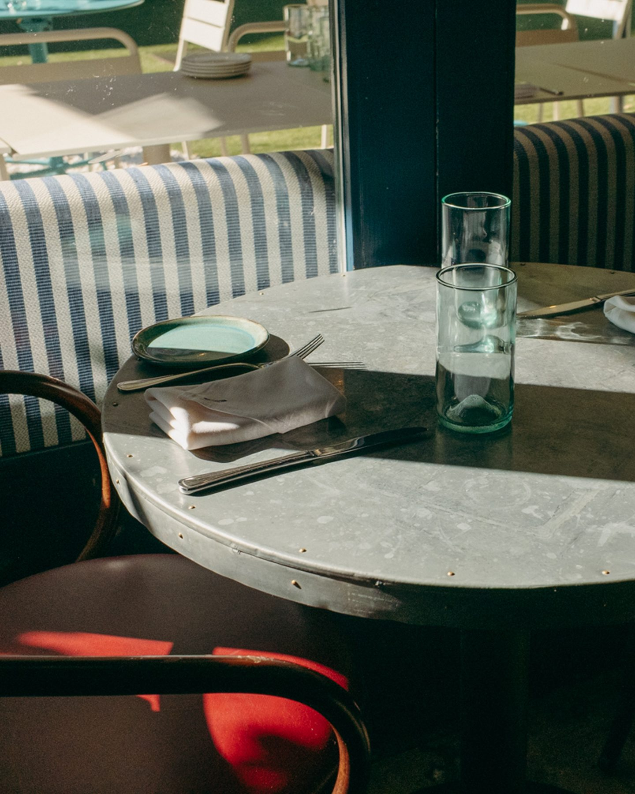
      <figcaption class="cap"><span class="lab"><b>The Optimist</b> / Atlanta, Georgia</span><span class="lab">Photograph: Jared Swafford</span></figcaption>
    </figure>
    <div class="stack">
      <h2>A place is built in months. It is lived in for generations.</h2>
      <p class="lede">Freeman's work ends on opening day. That is the day the life of the place begins. We film both: everything before the first guest, and everything the guests bring after.</p>
    </div>
  </div>
</section>

<!-- 02 -->
<section class="plate three" data-tone="sand" aria-label="Three times in the life of a place">
  <span class="sec">The subject</span><span class="num">02 / 12</span>
  <div class="in">
    <div class="head">
      <h2>Before. Threshold. After.</h2>
      <p class="lab" style="max-width:30em">Three times in the life of a place. The account moves between them, and so does every film.</p>
    </div>
    <div class="row">
      <div>
        <div class="cell wait"><span class="lab">To be shot</span><span class="what">5:52 a.m. The room before the crew. One work light, dust in the air, a cord across the floor.</span></div>
        <div class="t"><span class="lab">Before</span><strong>The making</strong></div>
      </div>
      <div>
        <figure class="cell">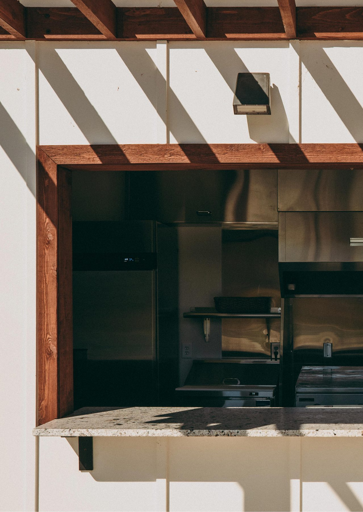</figure>
        <div class="t"><span class="lab">Threshold · Barnsley · Photograph: Jared Swafford</span><strong>The night before, the first night</strong></div>
      </div>
      <div>
        <figure class="cell">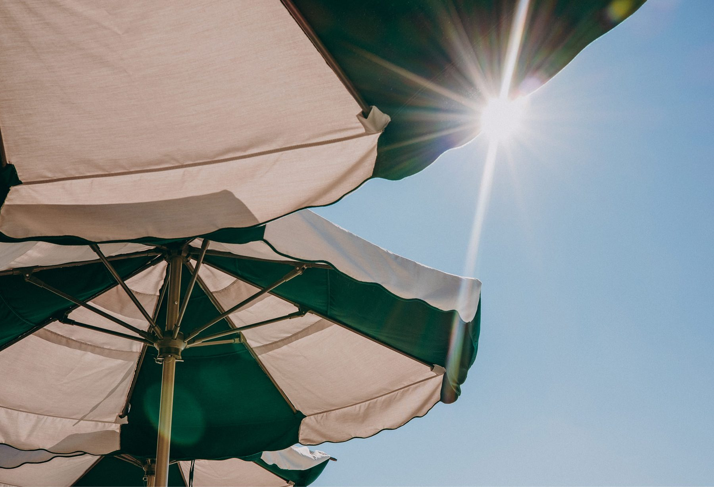</figure>
        <div class="t"><span class="lab">After · Barnsley · Photograph: Jared Swafford</span><strong>The years</strong></div>
      </div>
    </div>
  </div>
</section>

<!-- 03 -->
<section class="plate ruskin" data-tone="umber" aria-label="Ruskin">
  <span class="sec">The promise</span><span class="num">03 / 12</span>
  <div class="in">
    <figure>
      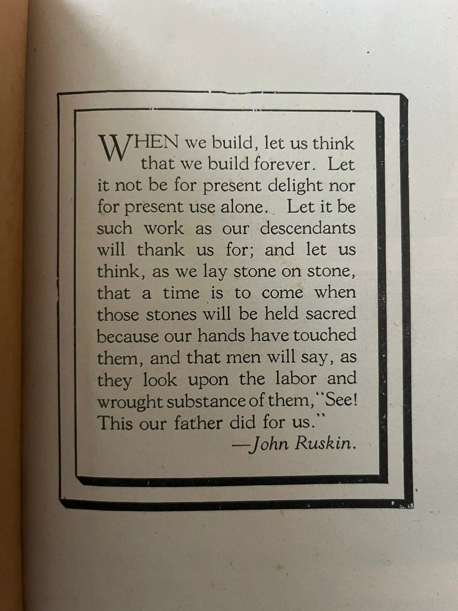
      <figcaption class="cap"><span class="lab">John Ruskin, <i>The Seven Lamps of Architecture</i>, 1849. Page from the Freeman archive</span></figcaption>
    </figure>
    <div class="stack" style="gap:30px">
      <blockquote>“See! This our father did for us.”</blockquote>
      <p class="lede">Built for Generations is a promise made to people who aren't born yet. The account is where we keep it in public.</p>
    </div>
  </div>
</section>

<!-- 04 -->
<section class="plate f1" data-tone="paper" aria-label="Film 01, Built for Generations">
  <span class="sec">Film 01</span><span class="num">04 / 12</span>
  <div class="in">
    <div>
      <div class="frame43 wait" style="--wait:#2b2619;--hl:#5d5546;--fg:#fff9f1;--mu:#c5b9a7;color:#fff9f1">
        <span class="lab">To be found, not written · 4:3</span>
        <span class="what" style="color:#fff9f1">Gabe Freeman. The land outside Cartersville. Winter into spring.</span>
      </div>
      <div class="cap"><span class="lab"><b>Built for Generations</b> / A portrait, 4–6 minutes</span><span class="lab">Director: Tristan</span></div>
    </div>
    <div class="stack" style="gap:22px">
      <h2 class="s">He has built the rooms where strangers fall in love, celebrate, grieve and come back. Almost none of them know his name.</h2>
      <p>A film about a man who makes places for other people's lives, and about whatever he is making for his own. We won't script him. We'll spend the winter near him: the land, the truck before light, the sites, the rooms after dark. The film is whatever we find when he forgets the camera.</p>
      <div class="look">
        <span class="lab">What we're listening for</span>
        <p>How he reads a room the moment he walks into it.</p>
        <p>The one thing he will not compromise, and the things he will.</p>
        <p>A full room that doesn't know he built it.</p>
      </div>
      <p class="lab open">Left to Tristan: the form, the length, one day or one season, the music or its absence, where the camera stands.</p>
    </div>
  </div>
</section>

<!-- 05 -->
<section class="plate f2" data-tone="paper" aria-label="Film 02, The Construction Film">
  <span class="sec">Film 02</span><span class="num">05 / 12</span>
  <div class="in">
    <div class="top">
      <div class="stack">
        <span class="lab">The Construction Film</span>
        <h2>Restraint is the default. Everything else has to be earned.</h2>
      </div>
      <dl class="ledger">
        <div><dt>The still frame</dt><dd>Home. The room is the stage; we wait for the work to cross it.</dd></div>
        <div><dt>Movement</dt><dd>When we follow someone through a doorway, up a stair, into the heat.</dd></div>
        <div><dt>Slow motion</dt><dd>When the eye can't see it at speed: sparks off a cut, a pour folding into a form.</dd></div>
        <div><dt>Music</dt><dd>When the place has it, or once, when a film has earned a score.</dd></div>
        <div><dt>Fast cutting</dt><dd>When the clock is the story: the last night before doors open.</dd></div>
      </dl>
    </div>
    <div class="strip" aria-label="A Tuesday, six frames to be shot">
      <div class="wait"><span class="lab">5:48 a.m.</span><span class="what">Headlights at the gate.</span></div>
      <div class="wait"><span class="lab">6:30</span><span class="what">The tailgate. Coffee, the day's sequence.</span></div>
      <div class="wait"><span class="lab">9:40</span><span class="what">Three people setting a slab level.</span></div>
      <div class="wait"><span class="lab">11:15</span><span class="what">A decision, overheard.</span></div>
      <div class="wait"><span class="lab">3:50 p.m.</span><span class="what">Light across a raw floor.</span></div>
      <div class="wait"><span class="lab">5:20</span><span class="what">Last one out. Lights off.</span></div>
    </div>
    <div class="cap"><span class="lab"><b>A Tuesday</b> / Six frames to be shot · 4:5 · location sound</span><span class="lab never">Never: speed ramps · drone reveals · stock music · LUT looks · letterbox bars · staged work · generated imagery</span></div>
  </div>
</section>

<!-- 06 -->
<section class="plate fm" data-tone="sand" aria-label="Formats">
  <span class="sec">Formats</span><span class="num">06 / 12</span>
  <div class="in">
    <h2>Eight ways back into the same subject.</h2>
    <div class="grid">
      <div class="card"><div class="vis wait"><span class="lab">Before</span><span class="what">Gate to lights out, one site, one day.</span></div><div class="when"><h3>A Tuesday</h3><span class="lab">60–90 s</span></div><p>The series anchor. The same shape every time; the site changes.</p></div>
      <div class="card"><div class="vis wait"><span class="lab">Before</span><span class="what">A drawing, a wall, three people deciding.</span></div><div class="when"><h3>The Decision</h3><span class="lab">60 s</span></div><p>One problem, one conversation, one choice. Judgment you can watch.</p></div>
      <div class="card"><div class="vis wait"><span class="lab">Before</span><span class="what">The tile setter, in her own words.</span></div><div class="when"><h3>Trades</h3><span class="lab">60 s</span></div><p>One person, one task, their name and company on screen.</p></div>
      <div class="card"><div class="vis wait"><span class="lab">Threshold</span><span class="what">The last 36 hours before doors open.</span></div><div class="when"><h3>The Night Before</h3><span class="lab">3 min</span></div><p>Every opening has one. The clock is the plot.</p></div>
      <div class="card"><div class="vis wait"><span class="lab">Threshold</span><span class="what">Same frame, same microphone. Empty. Then full.</span></div><div class="when"><h3>Room Tone</h3><span class="lab">30 s</span></div><p>Transformation you hear before you see.</p></div>
      <div class="card"><figure class="vis">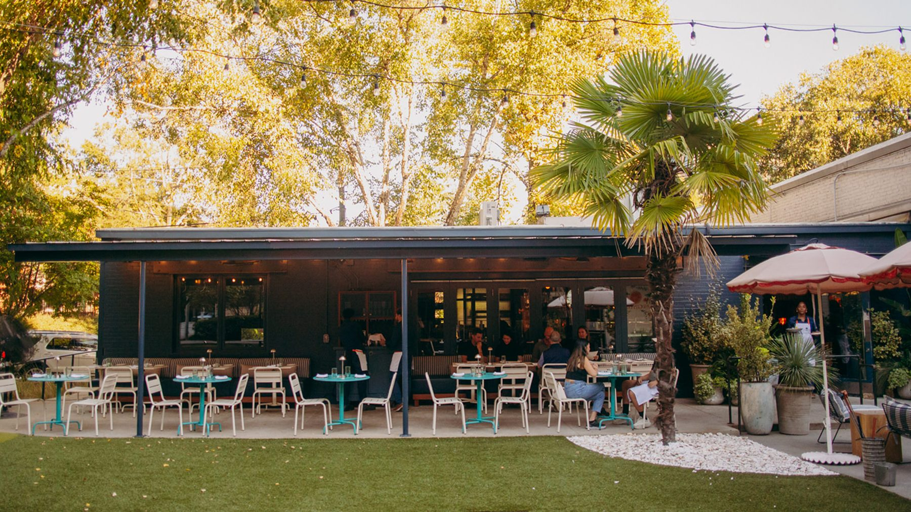</figure><div class="when"><h3>Regulars</h3><span class="lab">90 s</span></div><p>The people who make a place theirs. The Optimist · photograph: Jared Swafford.</p></div>
      <div class="card"><figure class="vis">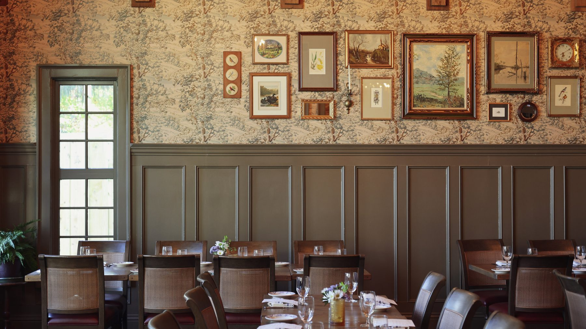</figure><div class="when"><h3>One Year Later</h3><span class="lab">60 s</span></div><p>Back on the anniversary. What wore in, what held. Woodlands at Barnsley Resort · photographer to confirm.</p></div>
      <div class="card"><figure class="vis">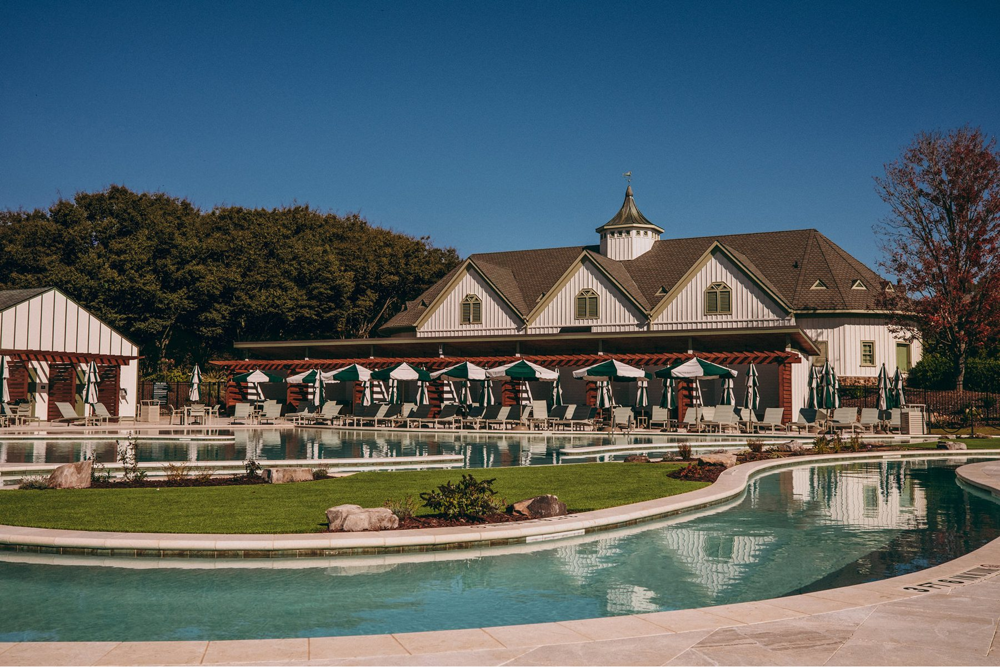</figure><div class="when"><h3>Return</h3><span class="lab">Stills</span></div><p>The same frame every season, for as long as it stands. Barnsley · photograph: Jared Swafford.</p></div>
    </div>
  </div>
</section>

<!-- 07 -->
<section class="plate lin" data-tone="umber" aria-label="Lineage">
  <span class="sec">Lineage</span><span class="num">07 / 12</span>
  <div class="in">
    <div class="head"><h2>The company we keep on screen.</h2><p class="lab" style="max-width:32em">Cited for what we take from each. Frames to be placed from licensed or public-domain sources; none is reproduced here.</p></div>
    <div class="refs">
      <div><span class="lab">Kelly Reichardt · 2019</span><h3><i>First Cow</i></h3><p>Patience. A near-square frame. People who never explain themselves.</p></div>
      <div><span class="lab">RaMell Ross · 2018</span><h3><i>Hale County This Morning, This Evening</i></h3><p>The South without nostalgia. Meaning made between images.</p></div>
      <div><span class="lab">Wim Wenders · 2023</span><h3><i>Perfect Days</i></h3><p>The dignity of a working routine, repeated until it shines.</p></div>
      <div><span class="lab">Frederick Wiseman · 2023</span><h3><i>Menus-Plaisirs – Les Troisgros</i></h3><p>A restaurant's whole life: farm, kitchen, dining room, family.</p></div>
      <div><span class="lab">Nikolaus Geyrhalter · 2019</span><h3><i>Earth</i></h3><p>Construction at enormous scale, watched calmly. The workers speak.</p></div>
      <div><span class="lab">Ila Bêka &amp; Louise Lemoîne · 2008</span><h3><i>Koolhaas Houselife</i></h3><p>A famous building seen through the woman who keeps it clean.</p></div>
      <div><span class="lab">William Christenberry · from the 1970s</span><h3>Hale County photographs</h3><p>The same Southern buildings, returned to year after year.</p></div>
      <div><span class="lab">William Eggleston · from the 1960s</span><h3>Colour photographs</h3><p>Southern colour without sentiment. Swafford's Freeman pictures already live nearby.</p></div>
      <div><span class="lab">Samuel Mockbee · Rural Studio · 1993–</span><h3>Hale County, Alabama</h3><p>Southern building, made with care, taken seriously by the world.</p></div>
      <div><span class="lab">Fay Jones · 1980</span><h3>Thorncrown Chapel</h3><p>The first reference in Freeman's cabin study: roof, threshold, structure as atmosphere.</p></div>
      <div><span class="lab">Chris Watson · field recordings</span><h3>Sound as the document</h3><p>Listening before looking. A room has a voice.</p></div>
      <div><span class="lab">Not this</span><h3>Anti-references</h3><p>Drone-reveal brand films, slow-motion food worship, stock-music reels, styled empty rooms, founder vlogs.</p></div>
    </div>
  </div>
</section>

<!-- 08 -->
<section class="plate sys" data-tone="paper" aria-label="The Instagram system">
  <span class="sec">The system</span><span class="num">08 / 12</span>
  <div class="in">
    <h2>Three frames, one publication.</h2>
    <div class="frames">
      <div class="fr f45-wrap">
        <figure class="f45">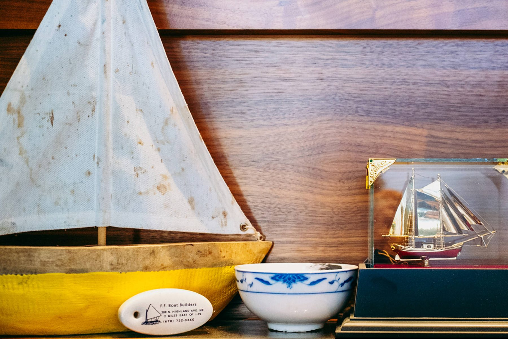</figure>
        <span class="lab"><b>Still</b> · 4:5 · pairs and sequences</span>
      </div>
      <div class="fr">
        <div class="f916 phone" id="phone" aria-label="A 9:16 sequence: a photograph with an opening label, then the eagle stamp on paper">
          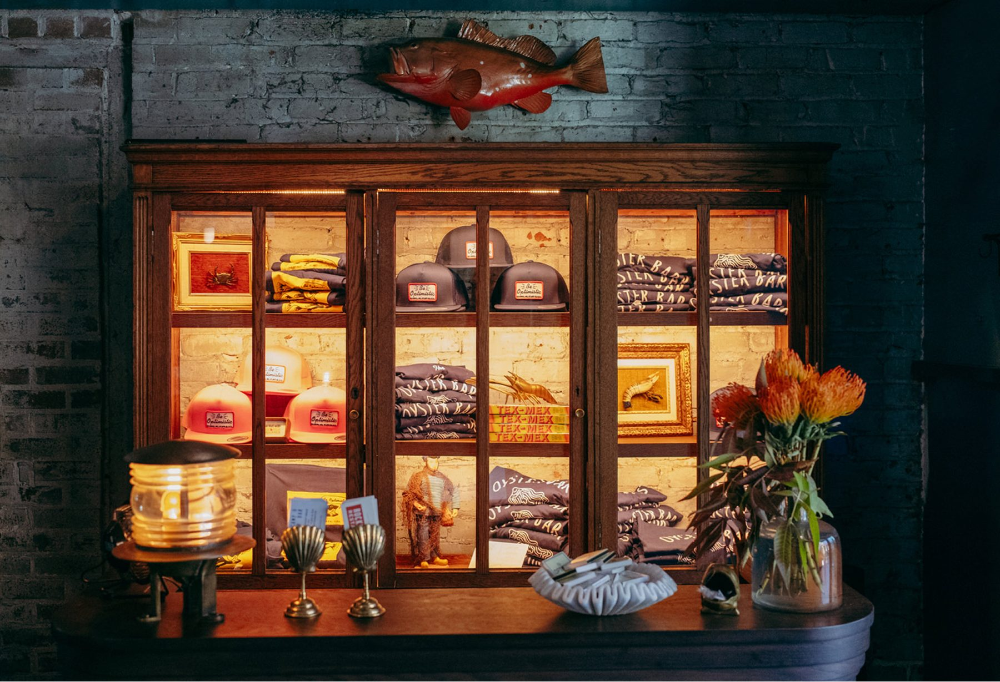
          <span class="plab" id="plab">The Optimist<br>Atlanta, Georgia</span>
          <div class="endp" id="endp" hidden><canvas class="px" id="phoneEagle" width="192" height="60"></canvas></div>
        </div>
        <span class="lab"><b>Motion</b> · 9:16 · label in, stamp out</span>
      </div>
      <div class="fr">
        <figure class="f169">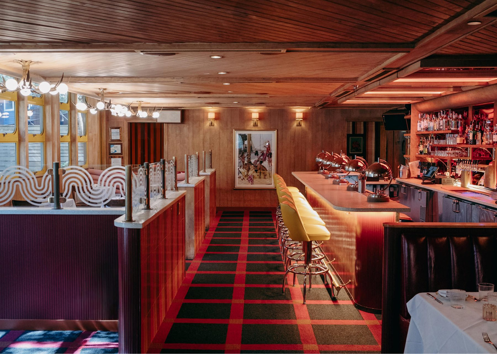</figure>
        <span class="lab"><b>Film</b> · 16:9 or 4:3 · 3 min in the feed, full length on freemangc.com</span>
      </div>
    </div>
    <div class="capspec">
      <div class="stack" style="gap:10px">
        <span class="lab">The caption is the second picture</span>
<pre>THE OPTIMIST / ATLANTA, GEORGIA

A set table before anyone sits down. Striped banquette, metal top, the light coming in off the patio.

Interior design: Chuck Marie Studio. Operator: Rocket Farm Restaurants.
Photograph: Jared Swafford.</pre>
      </div>
      <div class="stack" style="gap:10px">
        <span class="lab">Sound</span>
        <p>The room first. Then voices, tools, weather. Music when the place has it or the film has earned it. Speech subtitled in the house type, because most people meet a film with the sound off.</p>
        <span class="lab" style="margin-top:10px">Every photograph is still credited</span>
        <p>Photographers, designers, operators, and the trades who appear: by name, every time.</p>
      </div>
    </div>
  </div>
</section>

<!-- 08 -->
<section class="plate gr" data-tone="sand" aria-label="The profile grid">
  <span class="sec">The grid</span><span class="num">09 / 12</span>
  <div class="in">
    <div class="notes">
      <h2>Read it a row at a time. Every row is a spread.</h2>
      <div class="rows lab">
        <div><b>Row 1</b><span>A film, a room, a place.</span></div>
        <div><b>Row 2</b><span>A sentence, the work, the life after.</span></div>
        <div><b>Row 3</b><span>An object, the mark, a person.</span></div>
        <div><b>Row 4</b><span>Threshold, people, after dark.</span></div>
      </div>
      <p class="lab">Two or three posts a week. Planned in rows. Never published until three weeks are made.</p>
    </div>
    <div class="ig" aria-label="Profile grid mock-up">
      <div class="pr">
        <div class="av"><canvas class="px" id="avEagle" width="192" height="60"></canvas></div>
        <div><div class="h">builtforgenerations</div><div class="bio">Freeman General Contracting<br>Cartersville, Georgia</div></div>
      </div>
      <div class="hl"><span>Films</span><span>Before</span><span>After</span><span>People</span><span>Places</span></div>
      <div class="tiles">
        <div class="reel">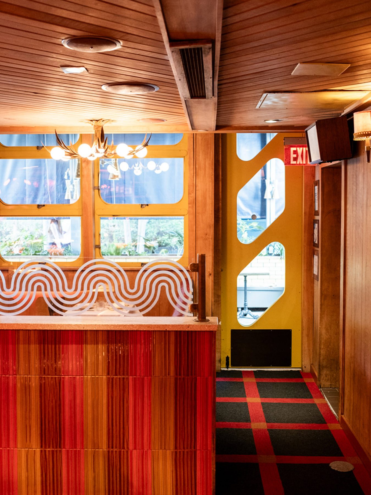</div>
        <div></div>
        <div class="wait"><span class="lab">Place</span><span class="what">The Etowah River, first light.</span></div>
        <div class="tq">“See! This our father did for us.”</div>
        <div class="wait"><span class="lab">Before</span><span class="what">A Tuesday, 5:48 a.m.</span></div>
        <div></div>
        <div></div>
        <div class="te reel"><canvas class="px" id="tileEagle" width="192" height="60"></canvas></div>
        <div class="wait"><span class="lab">Trades</span><span class="what">The tile setter.</span></div>
        <div></div>
        <div class="wait"><span class="lab">People</span><span class="what">The chef at 5 a.m.</span></div>
        <div></div>
      </div>
    </div>
  </div>
</section>

<!-- 09 -->
<section class="plate idn" data-tone="umber" aria-label="Identity and documentary">
  <span class="sec">Identity</span><span class="num">10 / 12</span>
  <div class="in">
    <div class="stack" style="gap:24px">
      <h2>The film ends. The eagle signs it.</h2>
      <p class="lede">The identity was drawn from the jobsite: the crosshair is a laser line, the eagle is a stamp, the script is a hand. So it touches the films twice and leaves them alone in between.</p>
      <p class="lab">Never: logo bugs · lower thirds · branded intros · templates · a graphic a film depends on.</p>
    </div>
    <div>
      <div class="stamp" id="bigStamp" role="button" tabindex="0" aria-label="Replay the eagle stamp"><canvas class="px" id="bigEagle" width="192" height="60"></canvas></div>
      <div class="trio">
        <div><div class="v"><span class="lab">Woodlands at Barnsley Resort<br>Adairsville, Georgia</span></div><span class="lab"><b>In</b> · one label, three seconds</span></div>
        <div><div class="v paper"><canvas class="px" id="smallEagle" width="192" height="60"></canvas></div><span class="lab"><b>Out</b> · the stamp, on paper</span></div>
        <div><div class="v wait" style="--wait:#3d3727"></div><span class="lab"><b>Red</b> · only where a decision was made</span></div>
      </div>
    </div>
  </div>
</section>

<!-- 10 -->
<section class="plate aud" data-tone="paper" aria-label="Who it is for">
  <span class="sec">The audience</span><span class="num">11 / 12</span>
  <div class="in">
    <div class="stack" style="gap:28px">
      <span class="lab">Made for a few hundred people. Open to everyone.</span>
      <div class="who"><span>Architects.</span><span>Restaurateurs.</span><span>Hotel operators.</span><span>Developers.</span><span>Designers.</span></div>
      <p class="lede">Freeman is moving toward larger and more ambitious hospitality work. These are the people who decide where the next important place gets built, and who builds it. The account should reach them before Freeman is in the room.</p>
    </div>
    <div class="stack" style="gap:12px">
      <span class="lab">Already in the credits</span>
      <div class="credits">
        <div><span>Rocket Farm Restaurants</span><span>Operator</span></div>
        <div><span>The Indigo Road Hospitality Group</span><span>Operator</span></div>
        <div><span>Electric Hospitality</span><span>Operator</span></div>
        <div><span>South Street Partners</span><span>Ownership</span></div>
        <div><span>South Downtown</span><span>Developer</span></div>
        <div><span>David Thompson Studio</span><span>Interiors</span></div>
        <div><span>Chuck Marie Studio</span><span>Interiors</span></div>
        <div><span>BLUR Workshop</span><span>Interiors</span></div>
        <div><span>NO Architecture</span><span>Interiors</span></div>
        <div><span>Gentle Works</span><span>Interiors</span></div>
      </div>
      <p class="lab">The measure: they forward it to each other without a word of explanation.</p>
    </div>
  </div>
</section>

<!-- 11 -->
<section class="plate tg" data-tone="sand" aria-label="Working together">
  <span class="sec">Together</span><span class="num">12 / 12</span>
  <div class="in">
    <h2>Five months. One body of work.</h2>
    <div class="cols">
      <div><span class="lab">Creative director</span><h3>Cole</h3><p>The world and its thesis. What Freeman publishes and in what order: the grid, the captions, the coherence. Access to Gabe, sites and clients. Final say on what carries the Freeman name.</p></div>
      <div><span class="lab">Director and cinematographer</span><h3>Tristan</h3><p>How it's filmed, cut and heard. Production planning on site. Authorship of the films, credited by name. The right to say a shot isn't true.</p></div>
      <div><span class="lab">Both keys</span><h3>Together</h3><p>What we shoot each week. A film is published when Tristan says it's finished and Cole says it belongs.</p></div>
    </div>
    <div class="lower">
      <div class="stack" style="gap:12px">
        <span class="lab"><b>By April</b></span>
        <ul>
          <li><span class="lab">01</span><span>A film people remember: <i>Built for Generations</i>.</span></li>
          <li><span class="lab">02</span><span>A body of construction films in a language that is recognisably ours.</span></li>
          <li><span class="lab">03</span><span>A publication the best architects, restaurateurs and operators follow on purpose.</span></li>
          <li><span class="lab">04</span><span>An archive: every frame dated, located and credited.</span></li>
        </ul>
      </div>
      <div class="neg stack" style="gap:12px">
        <span class="lab"><b>To agree together</b> · not decided here</span>
        <ul>
          <li><span class="lab">—</span><span>Scope and shoot days per month</span></li>
          <li><span class="lab">—</span><span>Budget: day rate, retainer or project fee</span></li>
          <li><span class="lab">—</span><span>Availability, November to April</span></li>
          <li><span class="lab">—</span><span>Camera, sound and post-production kit</span></li>
          <li><span class="lab">—</span><span>Rights, credit and portfolio use</span></li>
          <li><span class="lab">—</span><span>Approvals, turnaround, travel</span></li>
        </ul>
      </div>
    </div>
    <div class="end"><canvas class="px" id="endEagle" width="192" height="60" aria-label="Freeman eagle"></canvas><span class="lab"><b>Built for Generations</b></span></div>
  </div>
</section>

<section class="plate note" data-tone="umber" aria-label="Notes on sources">
  <div class="in" style="padding-block:28px">
    <p class="lab" style="max-width:none">Sources. Photographs: Freeman's published portfolio, credited as Freeman published them (Beetlecat, The Optimist and Barnsley by Jared Swafford; the Woodlands photographer is to be confirmed). Signature and eagle: the production 160 × 61 and 192 × 60 bitmaps and their approved motions, drawn live. Every “To be shot” frame is a plan; none is an image of Freeman work. Reference works on plate 07 are cited, not reproduced: their frames are to be placed from licensed or public-domain sources.</p>
  </div>
</section>

<script>
(()=>{"use strict";
const reduced=matchMedia("(prefers-reduced-motion: reduce)").matches;
function unpack(b64,w,h){const s=atob(b64),pts=[];for(let i=0;i<w*h;i++)if((s.charCodeAt(i>>3)>>(7-(i&7)))&1)pts.push([i%w,(i/w)|0]);return pts}
const EAGLE=unpack("__EAGLE__",192,60), SIG=unpack("__SIG__",160,61);
/* Production Stamp "impression": coarse blocks, then finer, then the artwork (eagle-motion.js). */
const EW=192,EH=60,eset=new Set(EAGLE.map(([x,y])=>y*EW+x));
function solid(n){const p=[];for(let by=0;by<EH;by+=n)for(let bx=0;bx<EW;bx+=n){let k=0;for(let y=by;y<by+n;y++)for(let x=bx;x<bx+n;x++)if(eset.has(y*EW+x))k++;if(k*2>=n*n)for(let y=by;y<Math.min(EH,by+n);y++)for(let x=bx;x<bx+n;x++)p.push([x,y])}return p}
const STEPS=[[300,solid(8)],[370,solid(4)],[430,solid(2)],[520,EAGLE]];
function paint(ctx,pts,col,w,h){ctx.clearRect(0,0,w,h);ctx.fillStyle=col;for(const [x,y] of pts)ctx.fillRect(x,y,1,1)}
function stamp(cv,col,{play=true,speed=1}={}){const ctx=cv.getContext("2d");if(!play||reduced){paint(ctx,EAGLE,col,EW,EH);return Promise.resolve()}
  return new Promise(done=>{let t0=null;ctx.clearRect(0,0,EW,EH);const tick=now=>{if(t0===null)t0=now;const t=(now-t0)*speed;let pts=[];for(const [at,p] of STEPS)if(t>=at)pts=p;paint(ctx,pts,col,EW,EH);if(t<1200)requestAnimationFrame(tick);else{paint(ctx,EAGLE,col,EW,EH);done()}};requestAnimationFrame(tick)})}
/* Production signature assembly (pixel-mark.js): hash-offset pixels settle into the script over 1850 ms. */
function hash(x,y){let t=Math.sin(x*127.1+y*311.7)*43758.5453;return t-Math.floor(t)}
const PIX=SIG.map(([x,y])=>{const r=hash(x,y);return{x,y,start:70+r*630,ox:(hash(y+11,x)*2-1)*13,oy:(hash(y,x+17)*2-1)*9}});
function signature(cv,col){const ctx=cv.getContext("2d"),D=1850,ease=t=>1-Math.pow(1-t,3);
  const draw=ms=>{ctx.clearRect(0,0,160,61);ctx.fillStyle=col;const done=ms>=D;for(const p of PIX){const t=done?1:Math.max(0,Math.min(1,(ms-p.start)/(D-p.start-60)));if(!t)continue;const e=ease(t);ctx.globalAlpha=done?1:Math.min(1,t*2.3);ctx.fillRect(Math.round(p.x+p.ox*(1-e)),Math.round(p.y+p.oy*(1-e)),1,1)}ctx.globalAlpha=1};
  if(reduced){draw(D);return}let t0=null;const loop=now=>{if(t0===null)t0=now;const ms=now-t0;draw(ms);if(ms<D)requestAnimationFrame(loop)};requestAnimationFrame(loop)}
const UMBER="#332e20",PAPER="#fff9f1",RED="#f93822";
signature(document.getElementById("sig"),RED);
stamp(document.getElementById("avEagle"),UMBER,{play:false});
stamp(document.getElementById("tileEagle"),PAPER,{play:false});
stamp(document.getElementById("smallEagle"),UMBER,{play:false});
stamp(document.getElementById("endEagle"),UMBER,{play:false});
const big=document.getElementById("bigEagle");stamp(big,RED,{play:false});
const bigBox=document.getElementById("bigStamp");
const replay=()=>stamp(big,RED,{speed:.8});
bigBox.addEventListener("click",replay);bigBox.addEventListener("keydown",e=>{if(e.key==="Enter"||e.key===" "){e.preventDefault();replay()}});
if("IntersectionObserver" in window){const io=new IntersectionObserver(es=>{for(const e of es)if(e.isIntersecting){replay();io.disconnect()}},{threshold:.6});io.observe(bigBox)}
/* 9:16 loop: picture with its label (cut in, cut out), then paper and the stamp. */
const lab=document.getElementById("plab"),endp=document.getElementById("endp"),pe=document.getElementById("phoneEagle");
stamp(pe,RED,{play:false});
if(!reduced){const wait=ms=>new Promise(r=>setTimeout(r,ms));
  (async function cycle(){for(;;){endp.hidden=true;lab.hidden=true;await wait(700);lab.hidden=false;await wait(2600);lab.hidden=true;await wait(2200);endp.hidden=false;pe.getContext("2d").clearRect(0,0,192,60);await wait(450);await stamp(pe,RED);await wait(1900)}})()}
/* Arrow keys page plate to plate, like a deck. */
const plates=[...document.querySelectorAll(".plate")];
addEventListener("keydown",e=>{if(e.target.closest&&e.target.closest("input,textarea"))return;const k=e.key;if(!["ArrowDown","ArrowUp","PageDown","PageUp"].includes(k))return;
  const y=scrollY+2;let i=plates.findIndex(p=>p.offsetTop>y);if(i<0)i=plates.length;const cur=Math.max(0,i-1);
  const nxt=(k==="ArrowDown"||k==="PageDown")?Math.min(plates.length-1,(plates[cur].offsetTop>=y-2&&plates[cur].offsetTop<=y?cur+1:i)):Math.max(0,plates[cur].offsetTop<y-4?cur:cur-1);
  e.preventDefault();plates[nxt].scrollIntoView({behavior:reduced?"auto":"smooth"})});
})();
</script>
